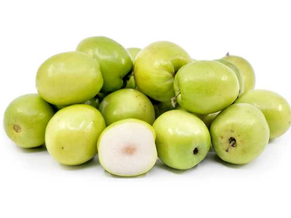

Ziziphus mauritiana
Common Names: Apple Ber, Indian Jujube, Chinese Date, Ber
Local Name: Ilanthai (Tamil), Ber (Hindi), Regi Pandu (Telugu)
Family: Rhamnaceae
Origin: Indo-Malaysian region; cultivated across tropical Asia and Africa
Plant Type: Perennial deciduous to semi-evergreen tree
Variety: Green Apple Ber — large-fruited cultivar with green skin
Average Lifespan: 25–40 years
| Growth Habit | Small to medium spreading tree with zigzag branching; armed with paired thorns |
| Plant Size | 4–10 meters tall; canopy spread 4–7 meters |
| Leaves | Alternate, ovate, 2–7 cm, glossy green above with fine white tomentum beneath; 3 prominent basal veins |
| Flowers | Tiny, greenish-yellow, 5-petaled, 3–5 mm across, in axillary cymes |
| Flower Characteristics | Inconspicuous but nectar-rich; attract bees, flies, and ants |
| Fruit | Round to oval, 3–6 cm diameter, crisp white flesh, sweet-tart flavour, apple-like crunch |
| Fruit Color | Bright green to yellowish-green when ripe; glossy smooth skin |
| Seed Characteristics | Single hard stone (drupe) containing 1–2 seeds |
| Root System | Deep taproot with extensive lateral spread; excellent for arid soils |
| Climate | Tropical to semi-arid; extremely heat and drought tolerant |
| Temperature Range | 20–42°C ideal; tolerates extreme heat; frost-sensitive when young |
| Rainfall Requirement | 200–1200 mm annually; thrives in low-rainfall areas |
| Soil Type | Highly adaptable; sandy, loamy, clay, saline, and alkaline soils |
| Soil pH Preference | 5.0–9.0 (extremely adaptable) |
| Sun Requirement | Full sun (8+ hours daily) |
| Spacing | 5–6 meters between trees |
| Irrigation Method | Drip irrigation or flood irrigation; minimal water needed |
| Water Requirement | Very low; one of the most drought-hardy fruit trees |
| Can it Grow in Pots? | Yes, in large pots (30+ liters) with annual pruning |
| Fertilizer Schedule | 2–3 times per year; pre-monsoon, flowering, and post-harvest |
| Recommended Organic Fertilizers | FYM (15–25 kg/tree), neem cake, vermicompost, wood ash |
| Pesticide Frequency | 2–3 sprays during fruiting; monitor for fruit fly |
| Recommended Organic Pesticides | Neem oil, pheromone traps, garlic-chili spray |
| Mulching Practice | Dry grass or leaf mulch to conserve moisture in arid conditions |
| Training System | Open centre; annual heading back is essential as fruit forms on new growth |
| Pruning Time | May–June (pre-monsoon); severe annual pruning required |
| How to Prune | Cut back all previous season's growth to 10–15 cm stubs; new shoots bear fruit |
| Common Pests | Fruit fly, bark-eating caterpillar, leaf webber, ber butterfly, mealybug |
| Common Diseases | Powdery mildew, leaf spot, fruit rot, gummosis |
| Disease Prevention & Remedies | Wettable sulphur for powdery mildew, good air circulation, remove fallen fruit, copper sprays |
| Flowering Months | July–October (on new season's growth) |
| Fruiting Season | November–March; 100–130 days after flowering |
| Days to Harvest | 100–130 days from flowering |
| Harvest Indicators | Fruit reaches full size, skin turns glossy yellowish-green, flesh is crisp and sweet |
| Average Yield per Plant | 50–100 kg per tree per year (mature tree) |
| Pollination Type | Cross-pollination by insects |
| Pollination Notes | Protandrous flowers require cross-pollination; plant multiple varieties nearby |
| Pollination Details | Dichogamous flowers; male phase precedes female; cross-pollination essential |
| Propagation by Seeds | Seeds germinate in 3–6 weeks after scarification; used for rootstock only |
| Propagation by Cuttings | Difficult; air layering possible but low success rate |
| Propagation by Grafting | T-budding or patch budding on wild Ziziphus rootstock; fruits in 2–3 years |
| Water Usage | Extremely low; ideal for water-scarce regions |
| Soil Conservation Practices | Deep roots prevent erosion; reclaims degraded and saline lands |
| Organic Practices Used | Naturally low-input crop; ideal for organic certification |
| Companion Plants | Pulses, vegetables, and fodder crops as intercrops |
| Biodiversity Benefits | Important nectar source for bees; fruit supports birds and wildlife in arid zones |
| Commercial Production Regions | India (Rajasthan, Gujarat, Maharashtra, MP, Telangana), Pakistan, Bangladesh, Thailand |
| Market Uses | Fresh fruit, dried ber, murabba, candy |
| Processing Uses | Dried fruit, ber powder, pickle, juice, candy |
| Market Value (Approx.) | ₹30–80 per kg (India); affordable and widely available |
| Symbolism | Sacred tree in Hinduism; ber leaves offered to Lord Shiva; mentioned in ancient texts |
| Traditional Uses | Fruit eaten fresh and dried; leaves used as fodder; bark in Ayurvedic medicine for wounds and digestion |
| Calories | 79 kcal per 100g |
| Dietary Fiber | 0.6 g per 100g |
| Vitamin C | 76 mg per 100g (127% DV) |
| Vitamin A | 40 IU per 100g |
| Iron | 0.5 mg per 100g |
| Potassium | 250 mg per 100g |
| Antioxidants | Very high vitamin C, phenolics, flavonoids, betulinic acid |
| Other Key Nutrients | Calcium, phosphorus, carotene, thiamine, riboflavin |
| Anxiety & Sleep | Jujube seeds contain jujubosides used traditionally as a calming agent |
| Immune Support | Exceptionally high vitamin C content strengthens immunity |
| Anti-inflammatory Properties | Bark and root extracts show anti-inflammatory and wound-healing properties |
| Heart Health | Antioxidants and potassium support heart health; low in fat |
| Digestive Health | Fruit aids digestion; dried ber used as a digestive tonic in Ayurveda |
Disclaimer: Information provided is for educational purposes only and not a substitute for medical advice.
Add your field observations here.